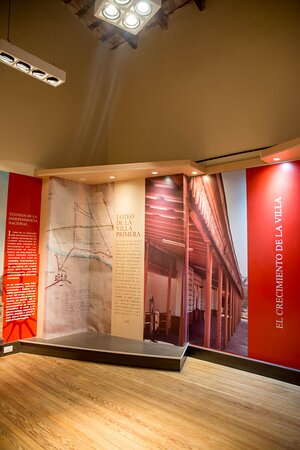
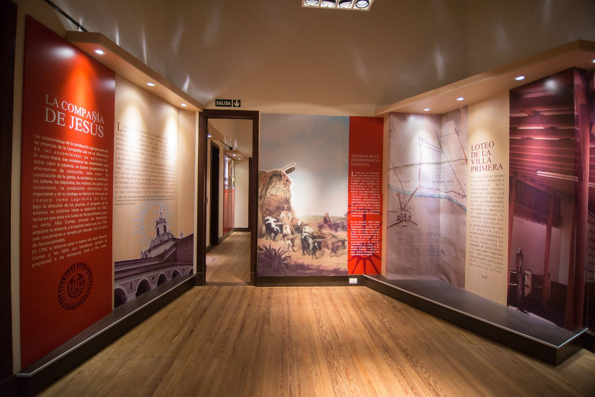
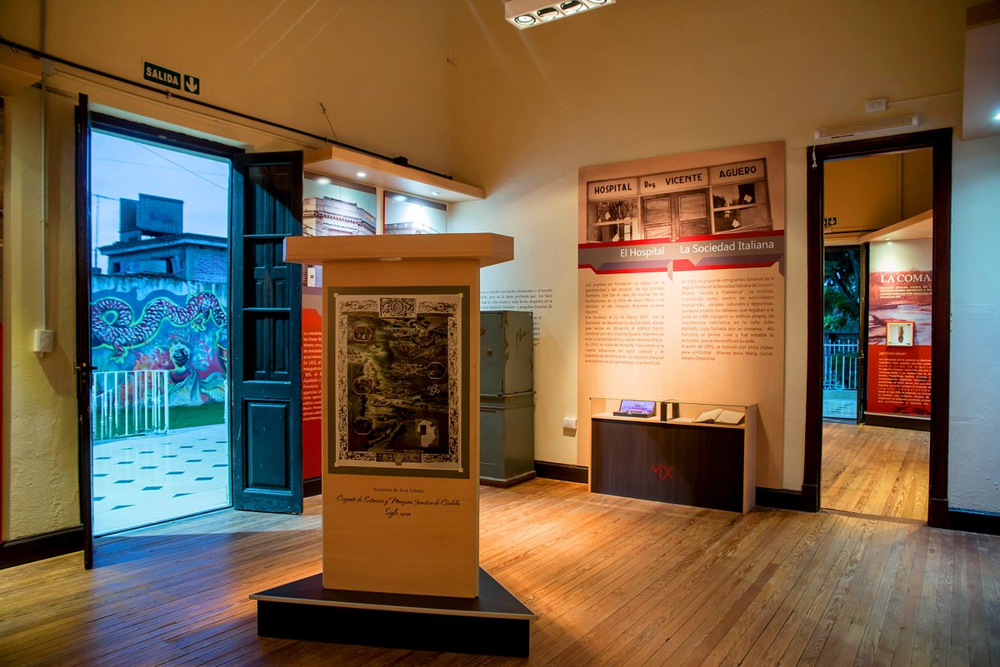
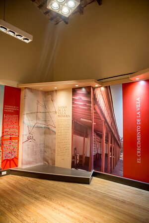
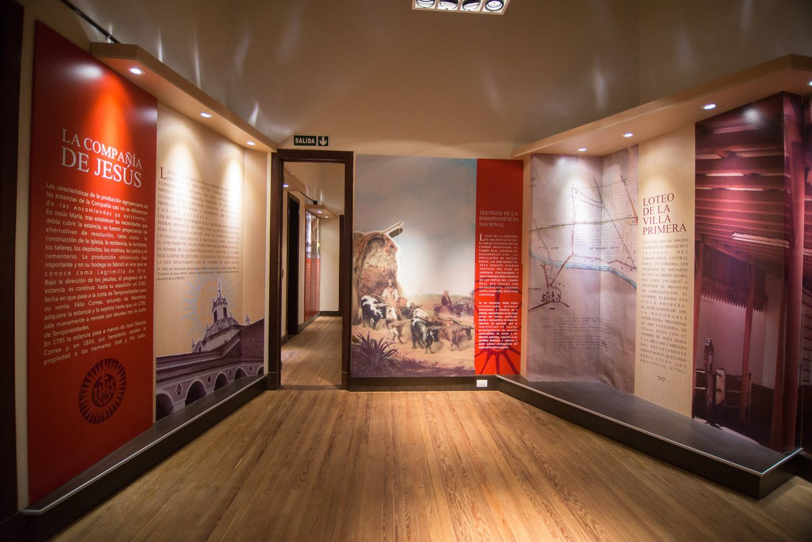
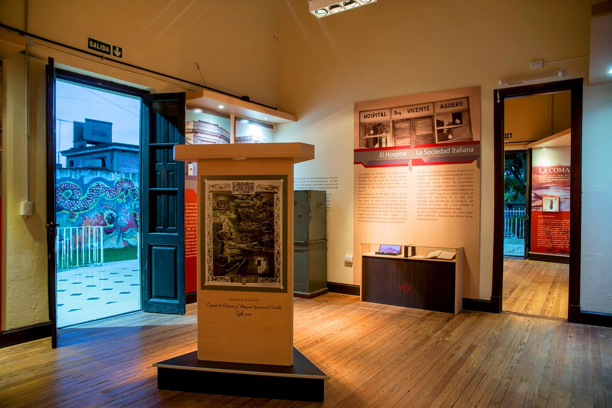
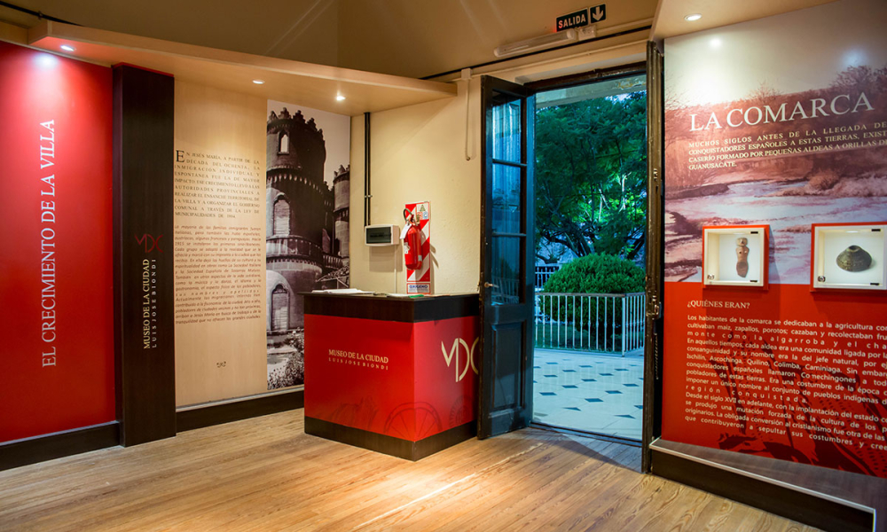
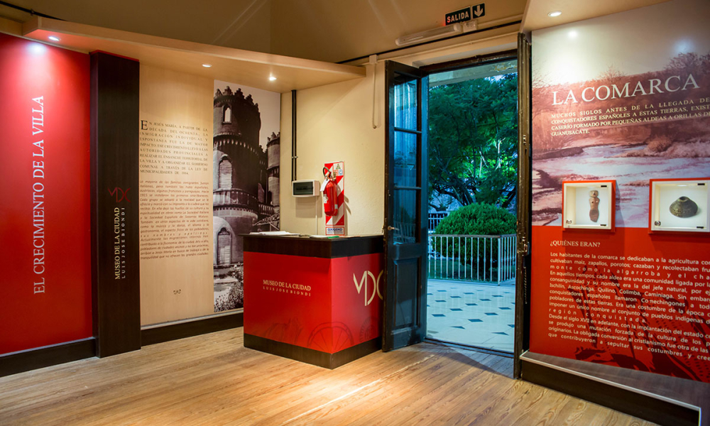

El Museo
Con pisos, aberturas y techos originales, esta casona es mantenida por el municipio desde la creación del museo en 2012, conservando su esencia y legado. Está situado en la calle Ingeniero Olmos 453. Construido a principios del Siglo XX, el edificio refleja el estilo residencial italianizante que caracterizó a muchas casas de la Villa Primera como se conoció a Jesús María en sus orígenes.


 





 
